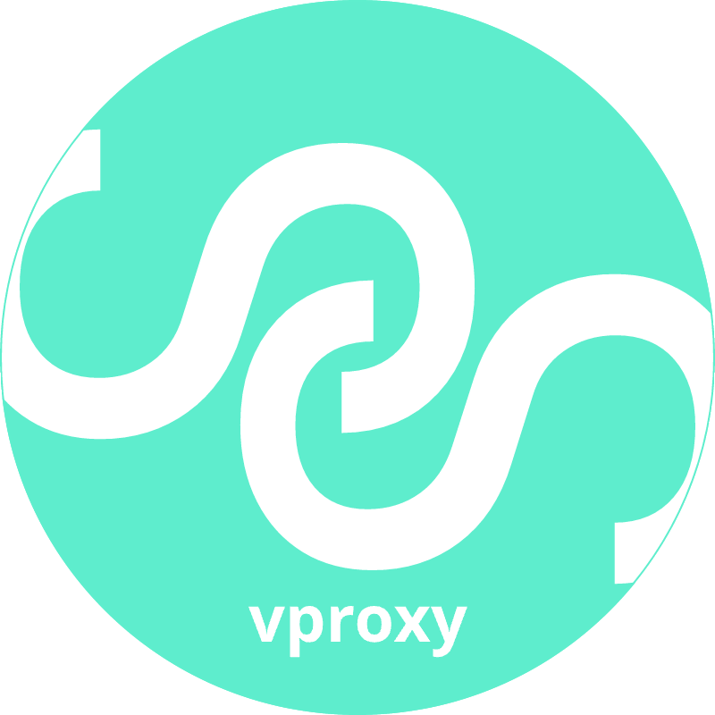

<!-- ok -->
<div id="app-header-menu">
  <div class="ui stackable inverted top menu" v-bind:class="[theme.primary]" style="border-radius: 0px;">
    <div class="item"></div>
    <a class="header item" href="overview.html" v-bind:class="{'active': general.page === 'overview'}">
      {{ $t("menu.overview") }}</a>
    <a class="item" href="network.html" v-bind:class="{'active': general.page === 'network'}">
      <i class="icon sitemap"></i>{{ $t("menu.network_config") }}</a>
    <a class="item" href="advance.html" v-bind:class="{'active': general.page === 'advance'}">
      <i class="icon asterisk"></i>{{ $t("menu.advance_config") }}</a>
    <template v-if="general.page === 'vpws-agent'">
      <a class="item" href="vpws-agent.html" v-bind:class="{'active': general.page === 'vpws-agent'}">
        <i class="icon paper plane"></i>{{ $t("menu.vpws_agent") }}</a>
    </template>
    <div class="right menu">
      <div class="ui dropdown item">
        <i class="icon desktop"></i>
        {{ $t("menu.system") }}
        <div class="ui label" v-bind:class="[theme.alert]" v-if="upgrade.upgrade">1</div>
        <i class="dropdown icon"></i>
        <div class="menu">
          <a class="item" v-on:click="persist()">
            <i class="icon save"></i>{{ $t("menu.system.persist_current_config") }}</a>
          <a class="item" v-on:click="reboot()"><i class="icon undo"></i>{{ $t("menu.system.reboot") }}</a>
          <a class="item" v-on:click="shutdown()"><i class="icon power off"></i>{{ $t("menu.system.shutdown") }}</a>
          <a class="item" href="command.html"><i class="icon terminal"></i>{{ $t("menu.system.command") }}</a>
          <a class="item" v-on:click="checkForUpdates()" v-if="!upgrade.upgrade">
            <i class="icon sync"></i>{{ $t("menu.system.checkForUpdates") }}</a>
          <a class="item" v-on:click="doUpgrade()" v-if="upgrade.upgrade">
            <i class="icon arrow alternate circle up outline"></i>{{ $t("menu.system.upgrade") }}
            <div class="ui left pointing label" v-bind:class="[theme.alert]" style="margin-left: 5px;">
              {{ upgrade.vpss.latest }}
            </div>
            <div class="ui left pointing label" v-bind:class="[theme.alert]">
              {{ upgrade.vproxy.latest }}
            </div>
          </a>
        </div>
      </div>
      <div class="ui dropdown item">
        <i class="icon user"></i>
        {{ session.username }}
        <i class="dropdown icon"></i>
        <div class="menu">
          <a class="item" href="user.html"><i class="icon edit"></i>{{ $t("menu.user.settings") }}</a>
          <a class="item" v-on:click="logout()"><i class="icon sign-out"></i>{{ $t("menu.user.logout") }}</a>
        </div>
      </div>
    </div>
  </div>
</div>
